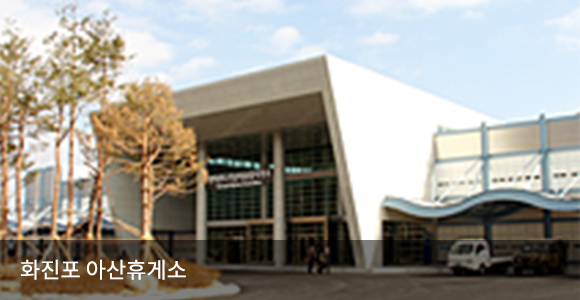
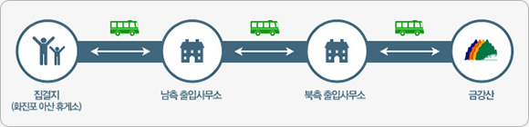

출발안내
여행에 필요한 준비사항!
짐꾸리기부터 출입과 유의사항 안내
여행에 필요한 것과 가져가지 말아야 할 것,
어떤 것들이 있을까요?
금강산관광에 필요한 짐꾸리기를 자세하게 안내해 드립니다.
여행이 더욱 즐거워지고 편리하기 위한 짐꾸리기를 차근 차근 확인해 보세요~
-
- 신분증
- 주민등록증, 운전면허증, 여권 중 하나 필수지참
-
- 화폐
- 미화를 기본으로 사용 하므로 미화를 준비 하세요. 금강산 현지에도 농협 금강산지점이 있으므로 환전 가능 하며, 금강산관광카드 충전 후 결제 시 현금처럼 사용 가능합니다. 사용화폐 : 미화, 신용카드, 관광카드
-
- 세면도구
- 칫솔, 치약, 면도기, 빗, 기타 개인 화장품
-
- 의류/속옷
- 등산복, 스웨터, 간편한 실내복, 속옷, 양말, 우의 등
-
- 구급약
- 소화제, 감기약, 진통제, 밴드에이드 등 기본상비약 (금강산에 병원사설이 있으니, 기본상비약 정도만 필요)
-
- 여행용 가방
- 이동시에는 여행용 가방이 편합니다. 관광지에서는 숙소에 여행용 가방을 두고 작은 배낭이나 벨트색을 사용하세요.
-
- 배낭
- 코스 여행시 물 간식, 수건 등을 넣을 수 있는 것으로 준비하세요.
-
- 벨트색 (허리색이나 힙색)
- 지갑, 신분증 등을 보관
-
- 모자
- 겨울에는 체온 유지용, 여름에는 자외선 차단 용도로 필요합니다.
-
- 시계
- 개성에는 핸드폰을 가져갈 수 없으므로, 시계를 준비하시면 편합니다.
-
- 비닐봉지
- 빈 비닐봉지가 있으면 젖은 옷, 세면도구 등을 보관하기 간편합니다.
-
- 드라이기
- 호텔급 숙소에는 비치되어 있지만, 이하 숙소에는 없음. 220V
-
- 카메라
- 초점거리 160mm 미만의 렌즈, 광학기준 24배 춤 미만의 카메라만 반입 가능하므로 확인 후 준비
-
- 캠코더 (비디오카메라)
- 광학기준 24배 줌 이상은 반입할 수 없으므로 확인 후 준비
-
- 노트북
- 금강산관광 출발일 최소 일주일전에 현대아산으로 노트북을 신청하세요. 간단한 서류 작성후 현대아산으로 제출합니다.
노트북신청안내 : 02) 3669 - 3000
- 10배율 이상의 쌍안경/망원경, 160mm 이상의 망원렌즈가 달린 사진기, 24배줌(광학기준) 이상의 줌렌즈가 달린 비디오카메라, 사진, 필름, 비디오테입, CD, 카세트테이프, 휴대폰(배터리 포함), MP3, GPS, 네비게이션, 소형라디오, 녹음기
- 개인의 치료목적을 위한 것을 제외한, 상표와 설명서가 없어 그 성분과 용도를 알 수 없는 약품 및 상품
- 관광객의 문화생활 및 편의목적으로 인정되는 종류와 수량을 제외한 인쇄물, 그림, 글자판, 녹화테이프
- 위조지폐
- 의료목적을 위한 것을 제외한 독약, 마약, 그 밖의 유독성 화학물질
- 무기, 총탄, 폭발물, 군용품, 흉기, 방사성물질, 인화물질
- 무전기와 그 부속품
- 전염병이 발생한 지역의 물건
- 기타 관광에 적합하지 않는 물건
-
 카메라안내
카메라안내
- 광학기기들은 1번 항목의 기준 이내면 휴대가능하며, 카메라의 기준은 렌즈의 초점거리 160미리 (35미리 기준)로 설명하고 있습니다. 최근 많은 사람들이 갖고 있는 디지털 카메라의 경우는 대부분의 카메라들이 35미리 필름에 비해 작은 김광면을 가지고 있으므로 (CMOS의 사이즈) 디카의 초점거리를 35미리로 환산해서 적용 해야합니다.
대부분의 디지털 카메라는 설명서나 제조사 사이트 쇼핑몰 등의 제품사양에 보면 35미리 환산시 초점거리가 나와 있으므로 그것으로 판단하면 됩니다.
-
 핸드폰 안내
핸드폰 안내
- 핸드폰은 7번의 무전기(통신용품)와 그 부속품에 해당되어 핸드폰 및 배터리 충전기 등 관련된 물품 일체를 가지고 갈 수 없습니다. 보통은 출발 전 집결지에 맡기면 됩니다.
금강산에 찾아가는 방법을
자세히 알려드립니다.
금강산은 북쪽에 있는데 어떻게 가야 하나 궁금하셨죠?
집결지까지는 셔틀버스/대중교통이나 자가용으로도
오실 수 있답니다.
- 먼저,집결지인 화진포 아산 휴게소까지 오세요.
-
화진포 아산 휴게소는 금강산에 들어가기 위한 집결지입니다. 집결지에 오시면 티켓 발권 등의 수속을 시작하실 수 있습니다.
- - 집결지 : 화진포 아산 휴게소
- - 주 소 : 강원도 고성군 현내면 초도리 산28번지
- - 집결지 관련 문의 : 현대아산 고성사무소
☎ (033)681-9400
- 육로 출발안내
-

- 현지시설: 금강산관광 발권장, 사무실, 안내데스크
- 편의시설: 식당(디아망),커피전문점, 휴게실, 편의점, 화장실 등
- 탑승 수속시간 (집결지 도착 시간)
-
- - 2박 3일 : 13:00
- - 1박 2일(8시출발) : 06:00
- - 당일 : 06:00
※ 탑승 수속시간에 늦지 않도록 도착하셔야 하며, 관광도우미의 안내에 협조하여 주시기 바랍니다.
-
화진포 아산 휴게소까지 오시는 방법입니다.
- 개별차량 이용 집결지 도착 고객
-
화진포 아산 휴게소에 무료주차가 가능하며 화진포 아산 휴게소에서 남측출입사무소까지의 왕복 버스비용을 별도로 지불하셔야 합니다.
- 서울출발 - 팔당대교 - 양평 - 홍천 - 인제(44번) - 원통 - 용대삼거리 - 진부령 - 간성방향 직진- 통일전망대 외길(7번 국도) - 화진포 아산휴게소 도착
- 서울출발 - 워커힐 - 구리시 - 가평 - 춘천 - 중앙고속도로 - 홍천 - 인제 - 원통 - 용대리 - 진부령 - 간성방향직진- 통일전망대 외길(7번 국도) - 화진포 아산휴게소 도착
- 영동고속도로 - 원주 - 중앙고속도로 - 홍천 - 인제 - 원통 - 용대삼거리 - 진부령 - 간성방향직진 - 통일전망대 외길(7번 국도) - 화진포 아산휴게소 도착
- 영동고속도로 - 강릉 - 주문진 - 속초 - 간성방향 - 통일전망대 외길(7번 국도) - 화진포 아산휴게소 도착
- 단체버스 이용 고객
-
거주지로부터 단체로 전세버스를 이용하시는 분들은 최소 5일전까지 예약을 하신 대리점으로 버스번호와 탑승인원 등을 반드시 통보하시기 바랍니다.
※ 차량번호를 사전에 관할 군부대에 통보해야만 민통선 검문소 통과가 가능합니다.
- 대중교통 이용 고객
-
시외버스 : 동서울 터미널, 상봉터미널에서 간성(고성) 및 대진 行 시외 버스 이용 후 간성, 대진에서 시내버스 1번 또는 1-1 번을 이용하여, 집결지(화진포아산휴게소) 로 이동
- 고속버스 이용 고객
-
서울 강남고속터미널에서 속초 행 고속버스 이용 후 통일전망대행 시외버스로 간성(고성)에서 하차, 다시 시내버스로 집결지(화진포아산휴게소) 로 이동
자! 이제 금강산 관광을 시작해볼까요?
금강산 출입 수속은 어떻게 진행될지 알아보세요. 보다 편하고 즐거운 여행이 될 수 있도록 최선을 다하겠습니다.
- 출입 진행 과정
-
개성 출입절차는 해외여행과 유사합니다.

- 출입 안내 및 주의사항
-
- 신분증을 꼭 가지고 오세요.
-
- - 신분증은 본인임을 증명하는 서류입니다. 해외 여행시에 필요한 것과 마찬가지로 반드시 지참하세요.
- - 신분증은 주민등록증, 운전면허증, 여권 중 하나를 가져오시면 됩니다.
- - 영주권자, 시민권자, 외국인은 반드시 여권을 지참하시기 바랍니다.
※ 문의 전화 : 현대아산 도라산사무소
☎ (031) 954-3940, (031)950-5195 - 집결지에서 관광에 필요한 서류들을 받으세요.
-
- - 집결지인 화진포 아산 휴게소에 도착하시면 관광에 필요한 서류들을 받으실 수 있습니다.
- - 내용이 잘못 표기된 사항은 관광조장에게 말씀해주세요.
- 집결지에서 받게 되는 서류들입니다.
-
[출경시 필요서류] 남측 → 금강산
-
금강산관광 이용권
- 회사용, 회수용, 관광객용 3장이 제공됩니다.
- 머무르실 숙소와 객실 방번호, 반/조가 적혀있습니다.
-
관광증 2장
- 원본과 미니관광증 각각 1장씩 제공됩니다.
- 일반 해외 여행에 있어 여권에 해당합니다.
- 관광증이 손상되거나 분실될 경우 위반금이 부과될 수 있으므로, 여행기간 동안 깨끗하게 보관해야 합니다.
-
출입신고서(출발)
- 법무부에서 관리하는 신고서로 북측으로 몇 명이 왕래하는지 체크하는 신고서입니다.
- 출발일에 남측 출입사무소에서 제출합니다.
[입경시 필요서류] 금강산 → 남측
-
검역질문서
- 보건복지부에서 관리하는 질문지로서, 검역법 제 9조의 규정에 의한 검역조사를 간소화하기위한 질문서입니다.
-
출입신고서(도착)
- 법무부에서 관리하는 신고서로 북측으로 몇 명이 왕래하는지 체크하는 신고서입니다.
- 도착일에 남측 출입사무소에서 제출합니다.
-
관광시에 알아두시면 더욱 편리하고
즐거운 여행이 되실 수 있습니다.
북측으로의 관광을 앞두고 여러가지 궁금하시죠?
우리나라와 다른 문화와 체제의 북측으로의 여행!
즐겁게 다녀오실 수 있도록 꼭 확인해보세요
북한을 부르는 호칭은 '북측'이적절합니다.
북한과 남한을 부르는 호칭은 '북측'과 '남측' 이 적절합니다. 북한이라는 호칭은 우리나라에서 생각하기에는 적절한 표현이지만, 북측에서는 '북측' 이라는 표현을 사용하는 것이 적절합니다.
금강산의 자연을
아끼고 사랑해주세요.
관광 도중 쓰레기를 버리거나, 자연물을 채취하는 것, 계곡에서 손을 씻는 일은 자연 을 훼손하는 일입니다. 아름다운 자연경관을 있는 그대로 사랑해주세요.
바위글발이나 주석비는 구경하거나 촬영만 해주세요.
금강산을 관광하시는 도중에 주석이나 바위에 새겨진 글씨(바위글발)를 보실 수 있습니다.
북측에서는 주석비나 바위글발에 손가락질을 하거나 기대거나 훼손하는 것을 금기시하고 있습니다. 우리와는 다른 문화와 체제를 가지고 있음을 이해해주시기 바랍니다.
버스 이동 중에는
사진 촬영하실 수 없습니다.
금강산은 북측에 속한 지역이므로, 버스 이동 중에는 사진촬영이 제한됩니다. 이동 중이 아닌 관광중에는 몇몇 제한된 지역을 제외하고는 자유롭게 촬영하실 수 있습니다.
관광증 보관에 주의해주세요.
관광증은 북측에서의 신분증입니다. 해외여행시 여권을 잃어버리면 곤란한 것과 같다고 생각하시면 됩니다. 구기거나 낙서, 물에 묻히지 않도록 훼손되지 않게 잘 보관해 주세요.
북측의 문화와 방식을 존중해주세요
금강산에서 마주치게 되는 북측 사람들은 관광해설원, 환경순찰원 호텔 및 각 영업장의 접대원 등 실로 다양합니다. 자연스럽게 대화를 나누시되 우리와는 다른 북측의 문화와 방식을 존중해주시기 바랍니다.